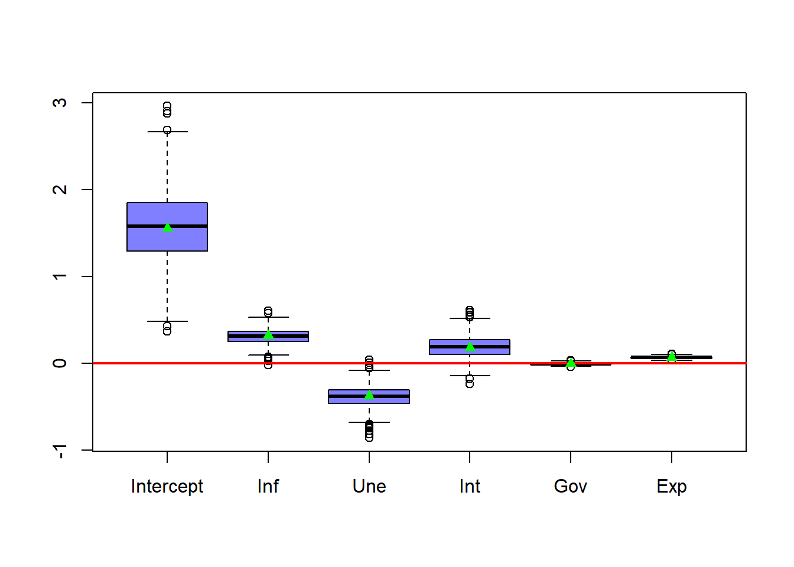
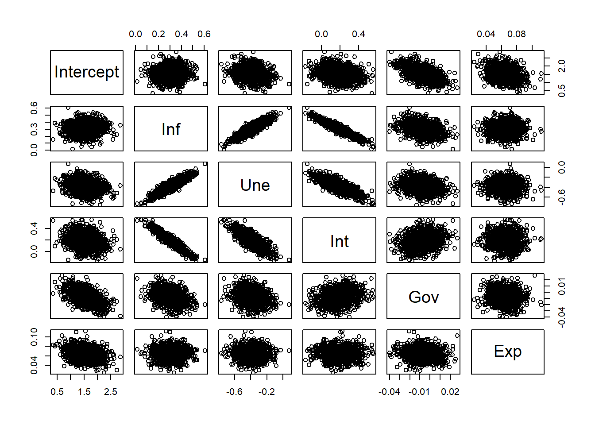
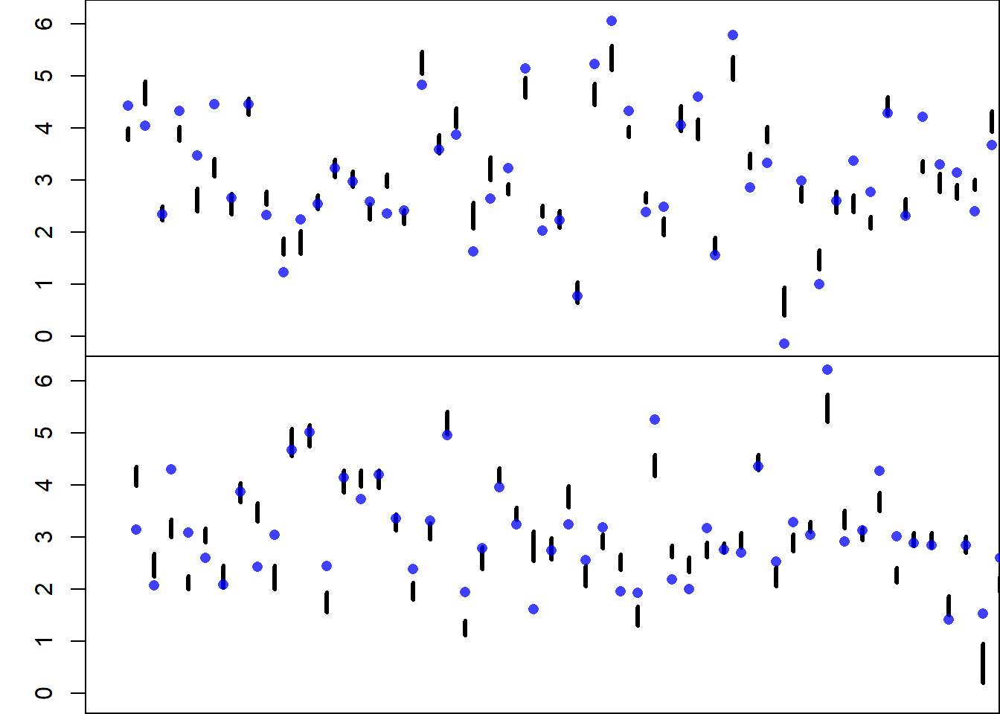
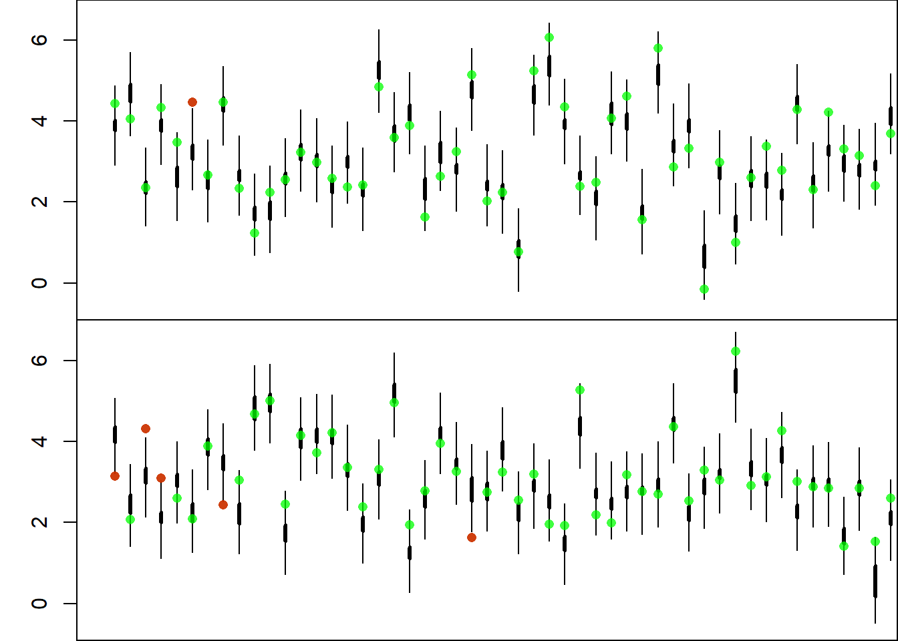

7 Bootstrapping
7.1 Introduction
Bootstrapping is a resampling-based statistical method used to estimate the variability of a statistic by repeatedly sampling from the observed data with replacement. Each resample, called a bootstrap sample, mimics the process of drawing new data from the population. By computing the statistic of interest (for example, the mean, median, or regression coefficients) for many bootstrap samples, we obtain an empirical distribution that approximates the sampling distribution of that statistic.
Unlike classical inference methods that rely on strong distributional assumptions (such as normality), bootstrapping is non-parametric and data-driven, making it highly flexible and particularly useful when sample sizes are small or assumptions are difficult to justify.
In a way, bootstrapping can be viewed as the “poor man’s probability”—it lets us approximate uncertainty purely from data, without relying on analytical formulas.
7.1.1 Key Points
- Resampling with Replacement: Each bootstrap sample is created by randomly drawing observations from the original dataset, allowing repetitions.
- No Distributional Assumptions: Bootstrapping makes no assumptions about the underlying population distribution.
- Estimation of Uncertainty: It provides estimates of standard errors, confidence intervals, and other measures of variability directly from the data.
In short, bootstrapping provides a simple and powerful way to quantify uncertainty when theoretical solutions are unavailable or unreliable.
7.2 Bootstrapping Example
Up to this point, we have computed several regression-related quantities of interest:
\[ \hat{\boldsymbol{\beta}}, \quad \hat{\mathbf{y}}, \quad \hat{\mathbf{e}} \]
These are all point estimates obtained from the least squares fit. When we studied influential observations and outliers, we saw how removing certain data points affected these estimates — but those changes provided only limited information about uncertainty.
Bootstrapping allows us to go much further. By repeatedly resampling the data and refitting the model, we can build empirical distributions for our estimates and thus quantify their variability.
Let’s illustrate this using GDP data.
# Data Load
dat <- read.csv(file = "Gdp data.csv")
# Assigns Values
X <- as.matrix(dat[, 2:6])
y <- as.numeric(dat$gdp)
# Regression without Bootstrapping
norReg <- lm(y ~ X)
# Number of Observations
n <- nrow(X)
# Design Matrix
X <- cbind(rep(1, n), X)
# Number of Variables
p <- ncol(X)
# Number of Bootstrapping Samples
m <- 1000
# Bootstrapping Coefficient Estimates
booCoe <- matrix(data = NA, nrow = m, ncol = p)
for(i in 1:m){
# Sample Selection
booSel <- sample(x = 1:n, size = n, replace = TRUE)
# Bootstrap Samples
Xb <- X[booSel, ]
yb <- y[booSel]
# Coefficient Estimation
booCoe[i, ] <- solve(t(Xb) %*% Xb, t(Xb) %*% yb)
}
# Plots the distribution for each coefficient with the point estimate without suing bootstrapping
boxplot(booCoe,
col = rgb(0, 0, 1, 0.5),
xaxt = "n")
axis(side = 1, at = 1:6, labels = c("Intercept", "Inf", "Une", "Int", "Gov", "Exp"))
abline(h = 0,
col = rgb(1, 0, 0),
lwd = 2)
points(norReg$coefficients, pch = 17, col = rgb(0,1,0))
##
## Call:
## lm(formula = y ~ X)
##
## Residuals:
## Min 1Q Median 3Q Max
## -1.56610 -0.38300 -0.00634 0.36630 1.22542
##
## Coefficients:
## Estimate Std. Error t value Pr(>|t|)
## (Intercept) 1.555301 0.380440 4.088 6.41e-05 ***
## Xinf 0.312218 0.090012 3.469 0.000647 ***
## Xune -0.377334 0.129275 -2.919 0.003938 **
## Xint 0.177827 0.128312 1.386 0.167403
## Xgov -0.008483 0.010361 -0.819 0.413950
## Xexp 0.064657 0.011930 5.420 1.80e-07 ***
## ---
## Signif. codes: 0 '***' 0.001 '**' 0.01 '*' 0.05 '.' 0.1 ' ' 1
##
## Residual standard error: 0.5024 on 190 degrees of freedom
## Multiple R-squared: 0.8096, Adjusted R-squared: 0.8046
## F-statistic: 161.6 on 5 and 190 DF, p-value: < 2.2e-16Explanation of the Code
This code performs bootstrap resampling of a linear regression model using GDP data.
The dataset is read and split into the predictor matrix
Xand the response vectory.A standard linear model (
norReg) is fit to the original data for reference.A design matrix is constructed by adding an intercept term.
We specify
m = 1000, meaning 1000 bootstrap replications.For each replication:
- A bootstrap sample is drawn from the indices
1:nwith replacement. - The model is refit using this resampled data.
- The estimated coefficients are stored in the matrix
booCoe.
- A bootstrap sample is drawn from the indices
Finally, a boxplot displays the bootstrap distributions of the coefficients, with:
- The red line indicating zero,
- The green triangles marking the original least squares estimates.
This visualization highlights the variability of each coefficient estimate.
The plot shows that the intercept has substantial uncertainty, while coefficients for inflation, unemployment, and interest rates show moderate variability. Government expenditure and exports have very little variability.
Even though the intercept varies widely, it remains positive in all bootstrap samples. Inflation and unemployment coefficients almost never change sign, suggesting strong evidence for their direction of effect. The interest rate coefficient is usually positive but sometimes negative, suggesting little evidence for the direction of the effect. The government expenditure coefficient hovers near zero. Exports remain small but consistently positive.
Notice this relationships and the number of * in the summary of the regular linear regression. Whenever a coefficient has all (or almost all) of its observations on one side of the red line, the summary assigns more *, while when a coefficient that has several observations on either side of the line, has no * indicating little significance.
We can also explore how the estimated coefficients relate to each other.
# Data Frame
booCoeDf <- data.frame(booCoe)
colnames(booCoeDf) <- c("Intercept", "Inf", "Une", "Int", "Gov", "Exp")
pairs(booCoeDf)
Explanation of the Code
This code creates a pairwise scatterplot matrix (pairs) of the bootstrap coefficient estimates. Each panel shows the relationship between two coefficients across all bootstrap samples.
The plot reveals that coefficients for inflation, unemployment, and interest rate are strongly correlated, indicating possible multicollinearity among these predictors. In contrast, government expenditure and exports appear largely independent of the others.
7.2.1 Bootstrapping Predictions
Bootstrapping can be applied not only to model coefficients but also to predicted values. We can use bootstrap samples to construct confidence intervals for the mean predictions and prediction intervals for individual outcomes.
# Mean Estimates
yh <- booCoe %*% t(X)
# Bootstrap Prediction Quantiles 2.5% and 97.5%
booConQua <- apply(X = yh, MARGIN = 2, FUN = quantile, probs = c(0.025, 0.975))
# Plots the Intervals and Observations
# Number of Plots
numPlo <- 2
ymin <- min(y, booConQua)
ymax <- max(y, booConQua)
xmin <- 0
xmax <- n / numPlo
xSet <- matrix(data = 1:n, nrow = numPlo, ncol = n / numPlo)
# Bootstrap Confidence Intervals Plot
par(mfrow = c(numPlo, 1))
par(mar = c(0, 3, 0, 0))
for(i in 1:numPlo){
plot(NULL,
xlim = c(xmin, xmax),
ylim = c(ymin, ymax),
ylab = "GDP % Growth",
xlab = "Countries",
xaxt = "n")
segments(x0 = xSet[i, ],
x1 = xSet[i, ],
y0 = booConQua[1, xSet[i, ]],
y1 = booConQua[2, xSet[i, ]],
lwd = 3)
points(x = xSet[i, ],
y = y[xSet[i, ]],
pch = 16,
col = rgb(0, 0, 1, 0.75))
}
# Coverage of the Bootstrap Confidence Intervals
print(paste0("Bootstrap Confidence Intervals Coverage = ", round(mean((y > booConQua[1, ]) & (y < booConQua[2, ])) * 100, 2) ))## [1] "Bootstrap Confidence Intervals Coverage = 27.55"Explanation of the Code
Here, the matrix multiplication booCoe %*% t(X) computes the fitted values for all bootstrap replications.
For each observation, the 2.5% and 97.5% quantiles across these replications form a 95% confidence interval for the mean prediction.
The resulting plot displays:
- Thick vertical lines for confidence intervals,
- Blue dots for observed GDP values.
Finally, the coverage rate — the proportion of true observations lying within their confidence intervals — is printed.
The intervals for mean predictions do not cover 95% of the observed values. This is expected, because these intervals quantify uncertainty in the mean response, not in individual observations. They do not account for the variability due to random errors.
7.2.2 Adding Prediction Intervals
To include the effect of random errors, we can also bootstrap the residuals and use them to construct prediction intervals.
### Error Bootstrapping Samples
eh <- t(t(yh) - y)
### Then we re-sample the errors
eh <- eh[sample(x = 1:(m * n), size = m * n, replace = FALSE)]
# Adds the resampled errors to the bootstrap observations sample
yp <- yh + eh
# Bootstrap Prediction Quantiles 2.5% and 97.5%
booPreQua <- apply(X = yp, MARGIN = 2, FUN = quantile, probs = c(0.025, 0.975))
# Plots the Intervals and Observations
# Number of Plots
numPlo <- 2
ymin <- min(y, booPreQua)
ymax <- max(y, booPreQua)
xmin <- 0
xmax <- n / numPlo
xSet <- matrix(data = 1:n, nrow = numPlo, ncol = n / numPlo)
# Non-Covered Observations
nonCov <- ((y > booPreQua[1, ]) & (y < booPreQua[2, ]))
# Bootstrap Confidence Intervals Plot
par(mfrow = c(numPlo, 1))
par(mar = c(0, 3, 0, 0))
for(i in 1:numPlo){
plot(NULL,
xlim = c(xmin, xmax),
ylim = c(ymin, ymax),
ylab = "GDP % Growth",
xlab = "Countries",
xaxt = "n")
segments(x0 = xSet[i, ] - (i - 1),
x1 = xSet[i, ] - (i - 1),
y0 = booConQua[1, xSet[i, ]],
y1 = booConQua[2, xSet[i, ]],
lwd = 3)
segments(x0 = xSet[i, ] - (i - 1),
x1 = xSet[i, ] - (i - 1),
y0 = booPreQua[1, xSet[i, ]],
y1 = booPreQua[2, xSet[i, ]],
lwd = 1)
points(x = xSet[i, ] - (i - 1),
y = y[xSet[i, ]],
pch = 16,
col = rgb(0, 1, 0, 0.75))
points(x = xSet[i, ][!nonCov[xSet[i, ]]] - (i - 1),
y = y[xSet[i, ][!nonCov[xSet[i, ]]]],
pch = 16,
col = rgb(1, 0, 0, 0.75))
}
# Coverage of the Bootstrap Confidence Intervals
print(paste0("Bootstrap Predictive Intervals Coverage = ", round(mean((y > booPreQua[1, ]) & (y < booPreQua[2, ])) * 100, 2) ))## [1] "Bootstrap Predictive Intervals Coverage = 94.39"Explanation of the Code
Residuals (
eh) are obtained by subtracting observed GDP from the bootstrap mean estimates.These residuals are resampled and added to the fitted values to simulate new predictions (
yp).For each observation, the 2.5% and 97.5% quantiles form the 95% prediction intervals.
The plot now shows:
- Thick lines for mean confidence intervals,
- Thin lines for prediction intervals,
- Green points for covered observations,
- Red points for uncovered observations.
Finally, the empirical coverage rate of the prediction intervals is printed.
The prediction intervals now achieve a coverage much closer to 95%, as expected. This reflects the inclusion of both estimation uncertainty and random variability.
Because bootstrap resampling involves randomness, running the code again will produce slightly different numerical results—an inherent feature of resampling methods.